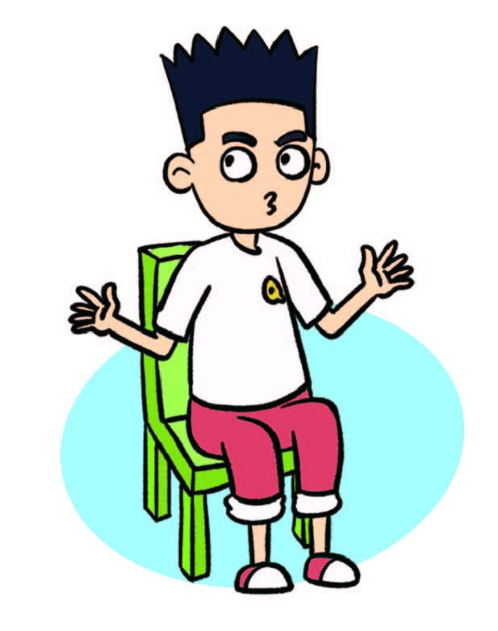
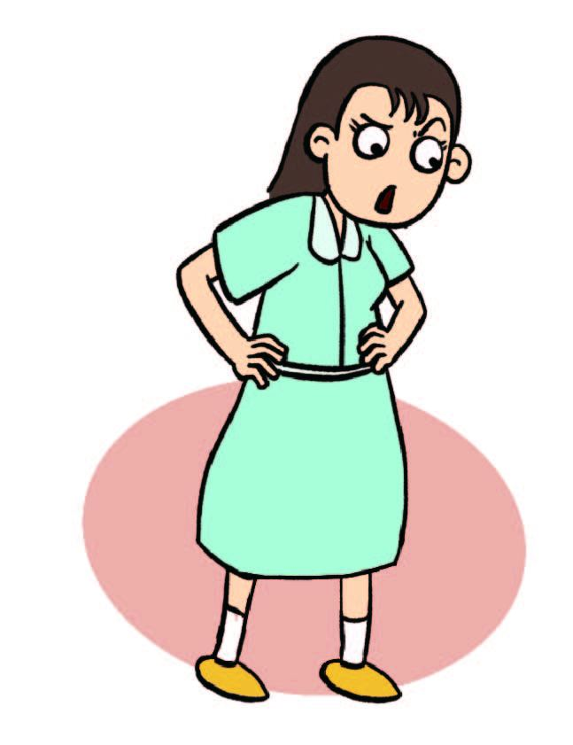
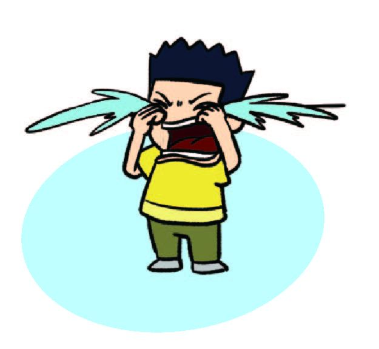
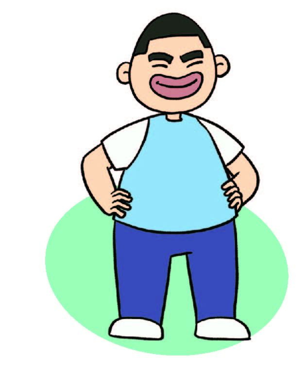
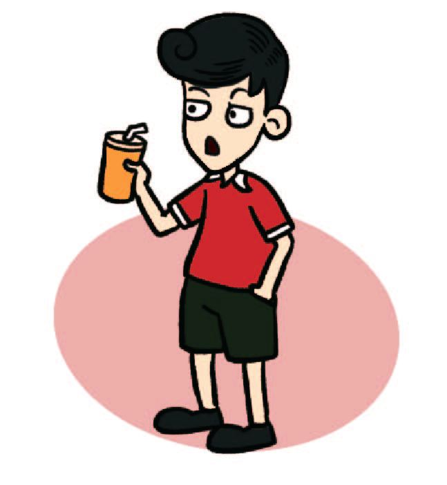
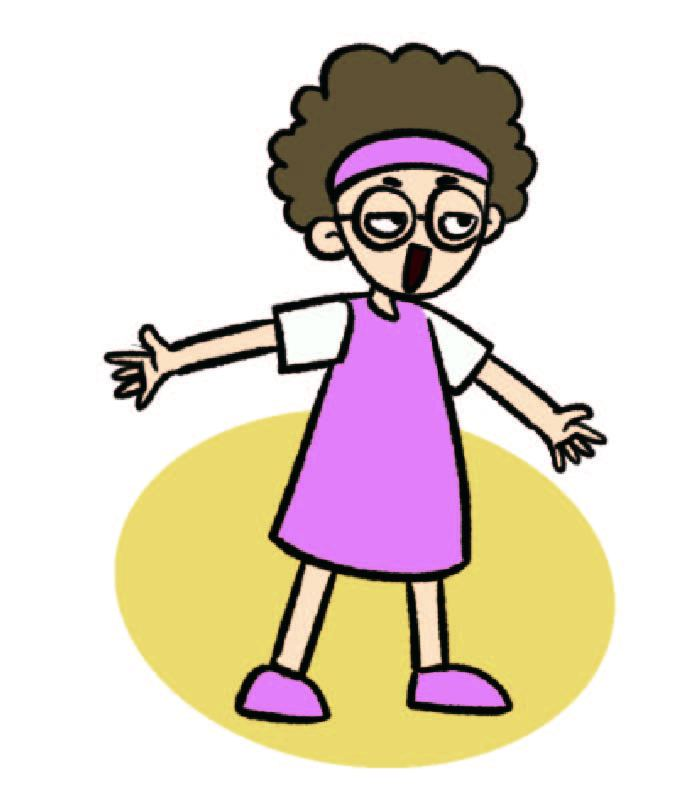
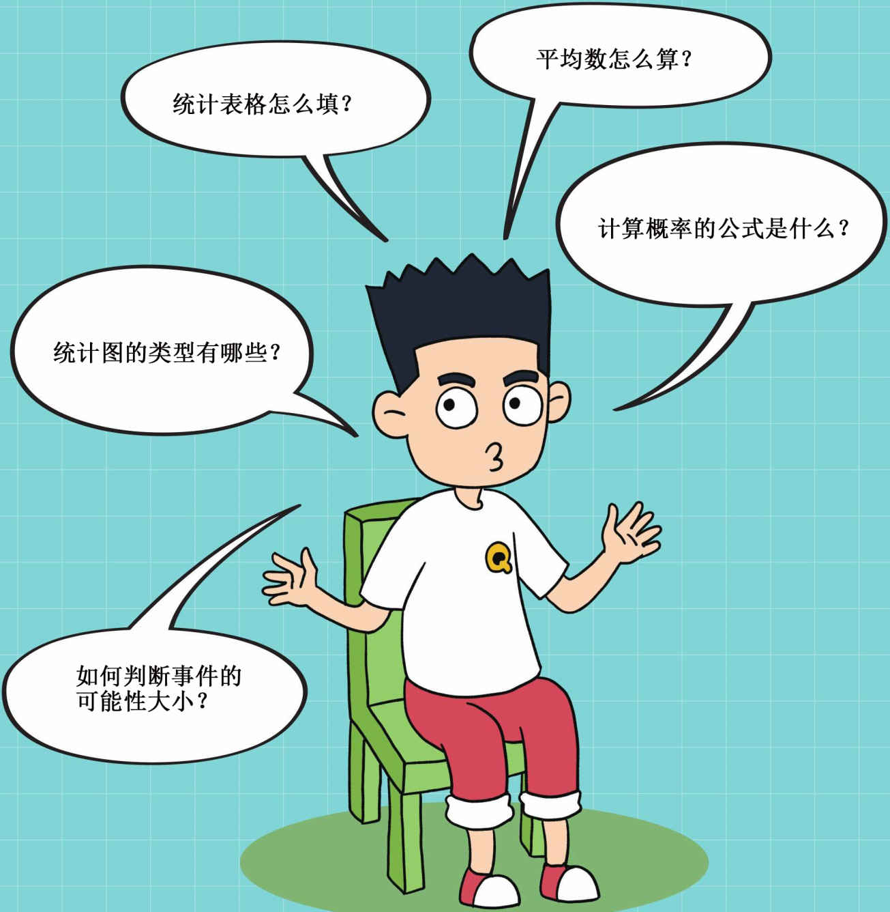

奇小奇
我们的主人公似乎和世界上其他小孩一样，调皮、马虎、充满好奇心，但他身上每天都会出现不可思议的“怪力场”。任何已知的科学定律在他面前都可能不成立。虽然这些怪力有时会给他造成困扰，但大部分时间里，他还是乐在其中。
奇爸
不著名非主流电影编剧，一门心思搞创作，希望全世界的人都能看到自己的作品。好脾气，似乎任何事情都不会让他着急，喜欢对着镜子模仿电影人物的动作。有时候看到奇小奇不经意间显露出来的怪力，还以为是自己的幻觉。

奇妈
服装设计师，对色彩和数字的变化很敏感，是全家的主心骨。望子成龙，所以对奇小奇要求十分严格，但是奇小奇的考试成绩经常让她情绪失控。

奇小怪
奇小奇的弟弟。虽然还不到3岁，说话和走路都还不利索，但是一点儿不妨碍他成为故事中的关键人物。虽然他没有哥哥身上的“怪力场”，但是靠近哥哥就能加持怪力，放大怪力的效用。小小的个子，竟然也有大大的能量！

庄小壮
奇小奇怪力的见证者兼好友。非常喜欢“帮助”奇小奇，虽然每次帮忙之后奇小奇都要遭殃，他也为此感到很愧疚，但是下一次仍然压抑不住帮助奇小奇的热情。心胸宽广，爱吃爱睡、爱笑，如果你遇见他，也会愿意和他做朋友。

元有宝
奇小奇的同班同学，慷慨大方，但是爱显摆。总是在奇小奇和庄小壮面前逞能，结果每次都惨淡收场。

铁雅玲
外表文静，实则急脾气，大嗓门，爱大惊小怪。平时喜欢问问题，尤其爱问身边的奇小奇，让不怎么爱说话的奇小奇十分难熬。
